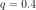
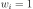
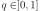
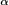
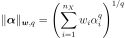
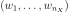
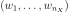

HyperbolicAnisotropicEnumerateFunction¶
- class HyperbolicAnisotropicEnumerateFunction(*args)¶
Hyperbolic and anisotropic enumerate function.
- Available constructors:
HyperbolicAnisotropicEnumerateFunction(dim)
HyperbolicAnisotropicEnumerateFunction(dim, q)
HyperbolicAnisotropicEnumerateFunction(weight)
HyperbolicAnisotropicEnumerateFunction(weight, q)
- Parameters
- diminteger
Dimension of the
EnumerateFunction. dim must be equal to the dimension of theOrthogonalBasis.- qfloat
Correspond to the q-quasi norm parameter. If not precised, .
- weightsequence of float
Weights of the indices in each dimension. If not precised, all weights are equals to .
See also
Notes
The hyperbolic truncation strategy is inspired by the so-called sparsity-of- effects principle, which states that most models are principally governed by main effects and low-order interactions. Accordingly, one wishes to define an enumeration strategy which first selects those multi-indices related to main effects, i.e. with a reasonably small number of nonzero components, prior to selecting those associated with higher-order interactions.
For any real number , one defines the anisotropic hyperbolic norm of a multi-index  by:

where
 is the number of input variables and  is a sequence of
real positive numbers called weights.
Functions of input variables with smaller weights are selected first
for the functional basis.
is the number of input variables and  is a sequence of
real positive numbers called weights.
Functions of input variables with smaller weights are selected first
for the functional basis.Examples
In the following example, we create an hyperbolic enumerate function in 2 dimension with a quasi-norm equal to 0.5. Notice, for example, that the function with multi-index [3,0] come before [1,1], although the sum of marginal indices is lower: this is the result of the hyperbolic quasi-norm.
>>> import openturns as ot >>> enumerateFunction = ot.HyperbolicAnisotropicEnumerateFunction(2, 0.5) >>> for i in range(10): ... print(enumerateFunction(i)) [0,0] [1,0] [0,1] [2,0] [0,2] [3,0] [0,3] [1,1] [4,0] [0,4]
In the following example, we create an hyperbolic enumerate function in 3 dimensions based on the weights [1,2,4]. Notice that the first marginal index, with weight equal to 1, comes first in the enumeration.
>>> import openturns as ot >>> enumerateFunction = ot.HyperbolicAnisotropicEnumerateFunction([1, 2, 4]) >>> for i in range(20): ... print('i=', i, 'enum=', enumerateFunction(i)) i= 0 enum= [0,0,0] i= 1 enum= [1,0,0] i= 2 enum= [0,1,0] i= 3 enum= [2,0,0] i= 4 enum= [3,0,0] i= 5 enum= [0,0,1] i= 6 enum= [0,2,0] i= 7 enum= [4,0,0] i= 8 enum= [5,0,0] i= 9 enum= [0,3,0] i= 10 enum= [6,0,0] i= 11 enum= [7,0,0] i= 12 enum= [0,0,2] i= 13 enum= [0,4,0] i= 14 enum= [8,0,0] i= 15 enum= [1,1,0] i= 16 enum= [9,0,0] i= 17 enum= [0,5,0] i= 18 enum= [10,0,0] i= 19 enum= [11,0,0]
Methods
__call__(index)Call self as a function.
getBasisSizeFromTotalDegree(maximumDegree)Get the basis size corresponding to a total degree.
Accessor to the object's name.
Return the dimension of the EnumerateFunction.
getId()Accessor to the object's id.
getMaximumDegreeCardinal(maximumDegree)Get the cardinal of indices of degree inferior or equal to a given value.
getMaximumDegreeStrataIndex(maximumDegree)Get the largest index of the strata of degree lower or equal to a given value.
getName()Accessor to the object's name.
getQ()Accessor to the norm.
Accessor to the object's shadowed id.
getStrataCardinal(strataIndex)Get the number of members of the basis associated to a given strata.
getStrataCumulatedCardinal(strataIndex)Get the cardinal of the cumulated strata above or equal to the given strata.
Accessor to the object's visibility state.
Accessor to the weights.
hasName()Test if the object is named.
Test if the object has a distinguishable name.
inverse(indices)Get the antecedent of a indices list in the EnumerateFunction.
setDimension(dimension)Set the dimension of the EnumerateFunction.
setName(name)Accessor to the object's name.
setQ(q)Accessor to the norm.
setShadowedId(id)Accessor to the object's shadowed id.
setVisibility(visible)Accessor to the object's visibility state.
setWeight(weight)Accessor to the weights.
- __init__(*args)¶
- getBasisSizeFromTotalDegree(maximumDegree)¶
Get the basis size corresponding to a total degree.
- Parameters
- maximumDegreeint
Degree.
- Returns
- sizeint
Number of members of the basis of degree
 .
.
Examples
>>> import openturns as ot >>> ef = ot.LinearEnumerateFunction(2) >>> size = ef.getBasisSizeFromTotalDegree(3)
- getClassName()¶
Accessor to the object’s name.
- Returns
- class_namestr
The object class name (object.__class__.__name__).
- getDimension()¶
Return the dimension of the EnumerateFunction.
- Returns
- dimint,

Dimension of the EnumerateFunction.
- dimint,
- getId()¶
Accessor to the object’s id.
- Returns
- idint
Internal unique identifier.
- getMaximumDegreeCardinal(maximumDegree)¶
Get the cardinal of indices of degree inferior or equal to a given value.
- Parameters
- maximumDegreeint
Degree.
- Returns
- cardinalint
Cardinal of indices of degree
.
Examples
>>> import openturns as ot >>> enumerateFunction = ot.LinearEnumerateFunction(2) >>> for i in range(6): ... indices = enumerateFunction(i) ... degree = sum(indices) ... print(str(int(degree))+' '+str(indices)) 0 [0,0] 1 [1,0] 1 [0,1] 2 [2,0] 2 [1,1] 2 [0,2] >>> print(enumerateFunction.getMaximumDegreeCardinal(2)) 6
- getMaximumDegreeStrataIndex(maximumDegree)¶
Get the largest index of the strata of degree lower or equal to a given value.
- Parameters
- maximumDegreeint
Degree.
- Returns
- indexint
Index of the last strata of degree
.
Examples
>>> import openturns as ot >>> enumerateFunction = ot.LinearEnumerateFunction(2) >>> for i in [1, 2]: ... indices = enumerateFunction(i) ... strataIndex = sum(indices) + 1 ... print(str(int(strataIndex))+' '+str(indices)) 2 [1,0] 2 [0,1] >>> print(enumerateFunction.getMaximumDegreeStrataIndex(2)) 2
- getName()¶
Accessor to the object’s name.
- Returns
- namestr
The name of the object.
- getQ()¶
Accessor to the norm.
- Returns
- qfloat
q-quasi norm parameter.
- getShadowedId()¶
Accessor to the object’s shadowed id.
- Returns
- idint
Internal unique identifier.
- getStrataCardinal(strataIndex)¶
Get the number of members of the basis associated to a given strata.
- Parameters
- strataIndexint
Index of the strata in the hierarchical basis. In the context of product of polynomial basis, this is the total polynom degree.
- Returns
- cardinalint
Number of members of the basis associated to the strata strataIndex. In the context of product of polynomial basis, this is the number of polynoms of the basis which total degree is strataIndex.
Examples
>>> import openturns as ot >>> enumerateFunction = ot.LinearEnumerateFunction(2) >>> for i in [3, 4, 5]: ... indices = enumerateFunction(i) ... degree = sum(indices) ... print(str(int(degree))+' '+str(indices)) 2 [2,0] 2 [1,1] 2 [0,2] >>> print(enumerateFunction.getStrataCardinal(2)) 3
- getStrataCumulatedCardinal(strataIndex)¶
Get the cardinal of the cumulated strata above or equal to the given strata.
- Parameters
- strataIndexint
Index of the strata in the hierarchical basis. In the context of product of polynomial basis, this is the total polynomial degree.
- Returns
- cardinalint
Number of members of the basis associated to the strata of index inferior or equal to strataIndex. In the context of product of polynomial basis, this is the number of polynomials of the basis which total degree is inferior or equal to strataIndex.
Examples
>>> import openturns as ot >>> enumerateFunction = ot.LinearEnumerateFunction(2) >>> for i in range(6): ... indices = enumerateFunction(i) ... degree = sum(indices) ... print(str(int(degree))+' '+str(indices)) 0 [0,0] 1 [1,0] 1 [0,1] 2 [2,0] 2 [1,1] 2 [0,2] >>> print(enumerateFunction.getStrataCumulatedCardinal(2)) 6
- getVisibility()¶
Accessor to the object’s visibility state.
- Returns
- visiblebool
Visibility flag.
- hasName()¶
Test if the object is named.
- Returns
- hasNamebool
True if the name is not empty.
- hasVisibleName()¶
Test if the object has a distinguishable name.
- Returns
- hasVisibleNamebool
True if the name is not empty and not the default one.
- inverse(indices)¶
Get the antecedent of a indices list in the EnumerateFunction.
- Parameters
- multiIndexsequence of int
List of indices.
- Returns
- antecedentint
Represents the antecedent of the multiIndex in the EnumerateFunction.
Examples
>>> import openturns as ot >>> enumerateFunction = ot.LinearEnumerateFunction(2) >>> for i in range(6): ... print(str(i)+' '+str(enumerateFunction(i))) 0 [0,0] 1 [1,0] 2 [0,1] 3 [2,0] 4 [1,1] 5 [0,2] >>> print(enumerateFunction.inverse([1,1])) 4
- setDimension(dimension)¶
Set the dimension of the EnumerateFunction.
- Parameters
- dimint,
Dimension of the EnumerateFunction.
- dimint,
- setName(name)¶
Accessor to the object’s name.
- Parameters
- namestr
The name of the object.
- setQ(q)¶
Accessor to the norm.
- Parameters
- qfloat
q-quasi norm parameter.
- setShadowedId(id)¶
Accessor to the object’s shadowed id.
- Parameters
- idint
Internal unique identifier.
- setVisibility(visible)¶
Accessor to the object’s visibility state.
- Parameters
- visiblebool
Visibility flag.
- setWeight(weight)¶
Accessor to the weights.
- Parameters
- wsequence of float
Weights of the indices in each dimension.